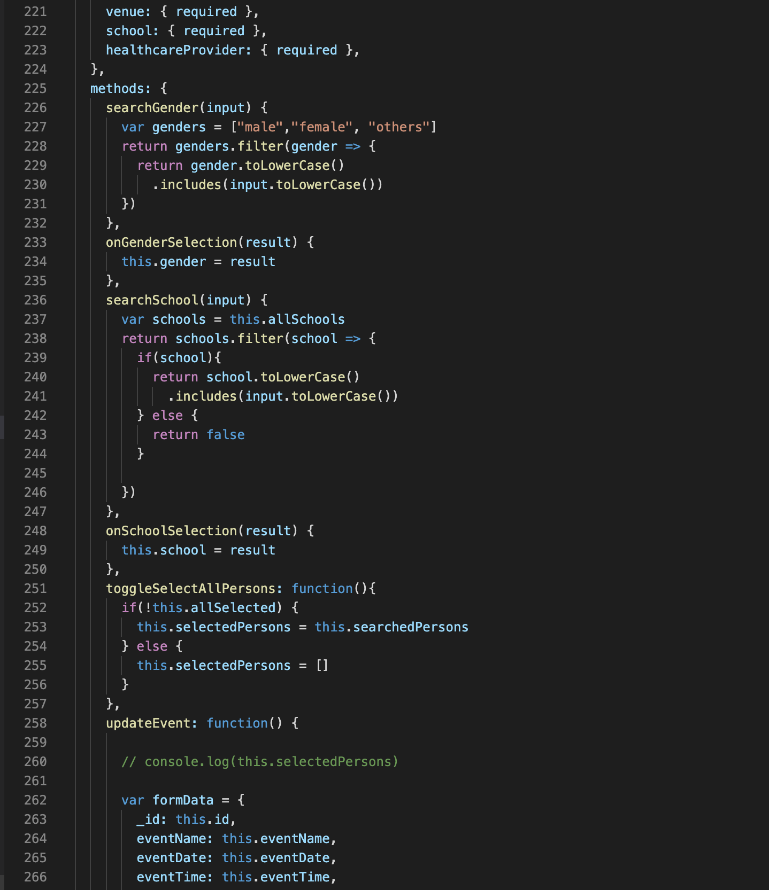
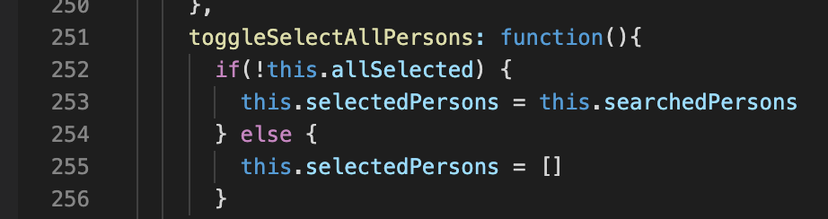

Microservices
Prabhat Sharma
What are microservices anyway?
By
Prabhat Sharma
Solutions Architect
What's a monolith anyway?
To understand, let's look at the source code
Source code

Monolith
Service
Microservices
Service 1 - 
Service 2 -
Service 3 -
Service 4 -
Microservices features
Componentization via Services
Organized around Business Capabilities
Products not Projects
Smart endpoints and dumb pipes
Decentralized Governance
Decentralized Data Management
Reference
Definition by Martin Fowler
Sample microservices architecture
Benefits of microservices
Isolation
Productivity
Faster project development
Evolutionary
Polyglot
Challenges with microservices
Increase in complexity of architecture
Testing & debugging becomes difficult
Steep learning curve of distributed architectures
How to solve these challenges?
Containers and container orchestrators
Serverless compute
Service mesh
Observability tools
Thank you